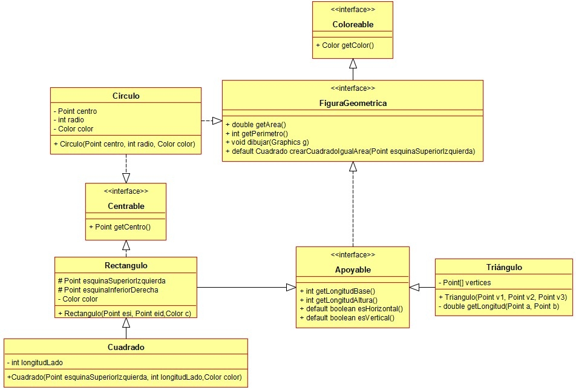

Ejercicio 27 : Programa la interfaz Apoyable y la clase Círculo.

-
Apoyable: Es una figura geométrica que tiene una base y una altura.
-
getLongitudBase y getLongitudAltura: devuelven dichas longitudes.
-
esHorizontal: método que devuelve true si la base es mayor que la altura.
-
esVertical: método que devuelve true si la altura es mayor que la base.
-
Circulo: Clase que representa un círculo e implementa todas las interfaces asociadas.